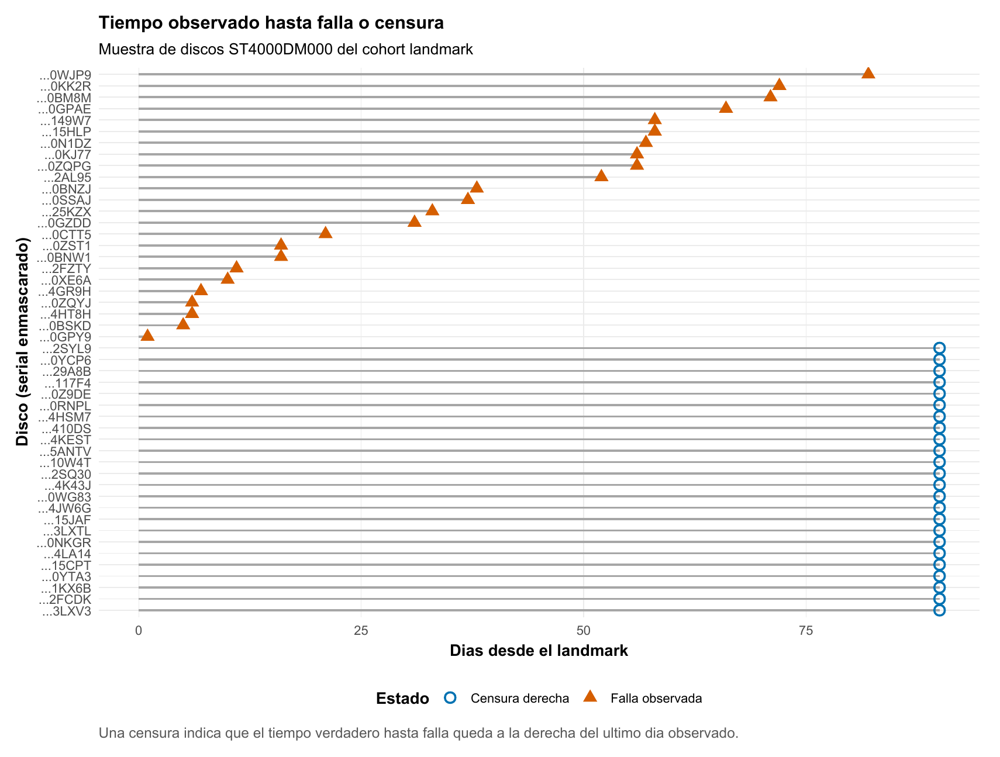
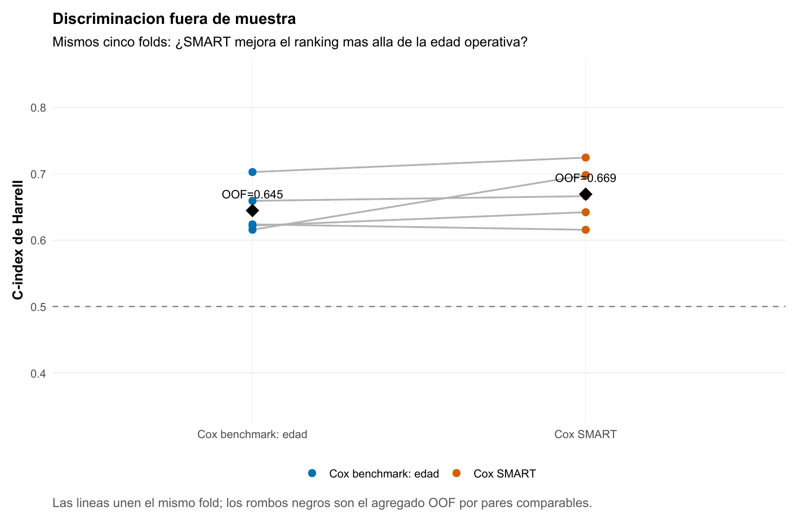
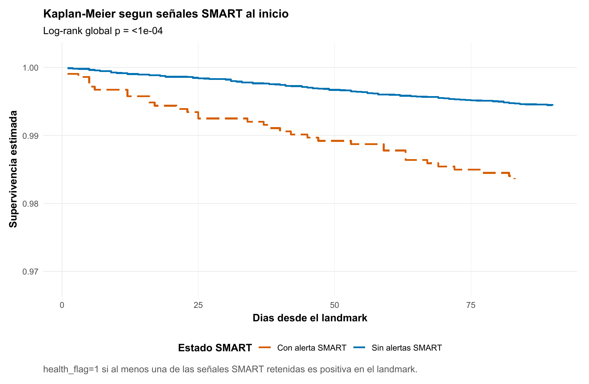
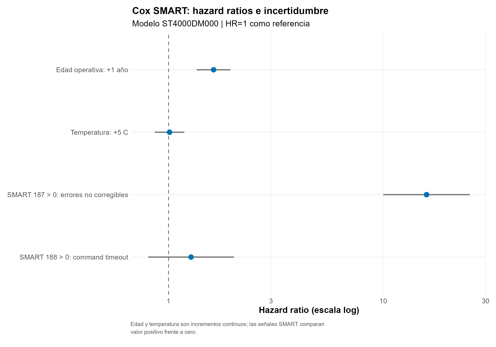
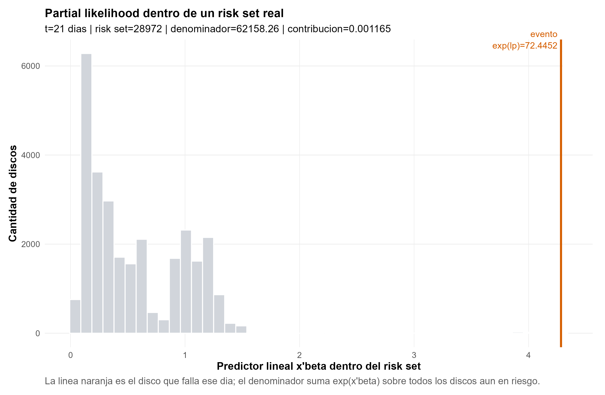
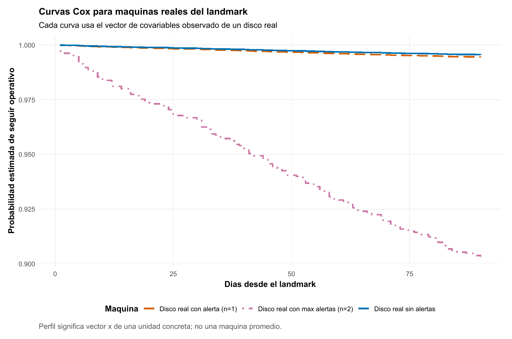
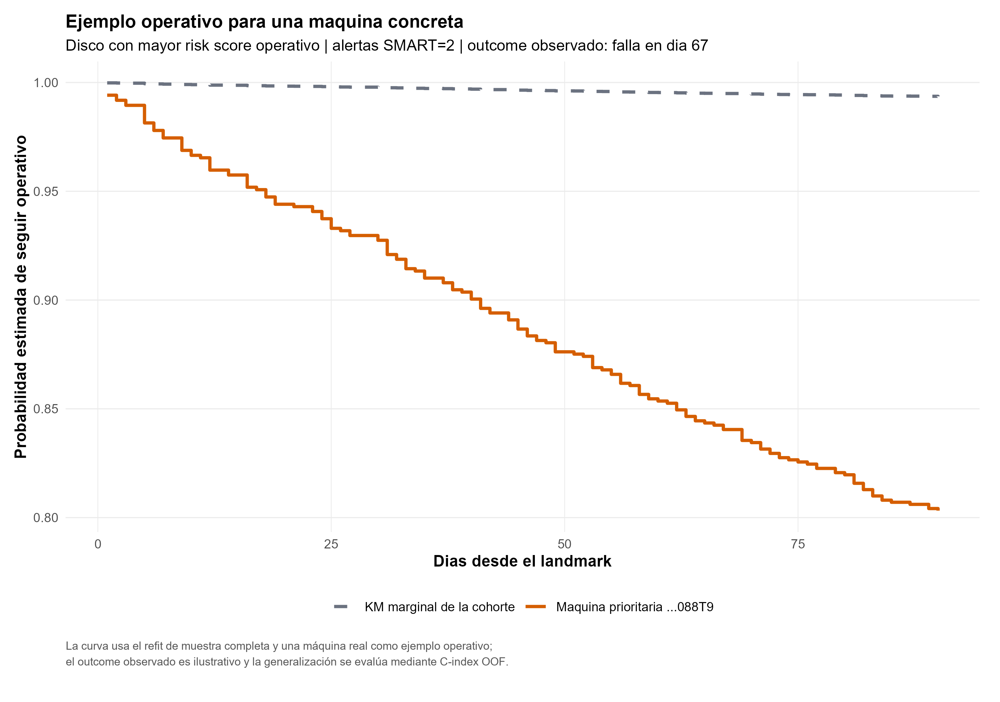

Fallas de discos: predecir cuándo importa más que predecir si ocurre
Censura, señales SMART y predicción del tiempo hasta falla
Supervivencia · Tiempo hasta falla · Mantenimiento predictivo
¿Podemos utilizar el estado conocido de un disco para estimar cuánto tiempo seguirá funcionando y priorizar las máquinas con mayor riesgo de falla?
En 29.021 discos de Backblaze, la telemetría SMART mejora de forma moderada el ranking fuera de muestra respecto de conocer solamente la edad operativa. El resultado no es una etiqueta aislada: es un score de riesgo y una curva de probabilidad para cada horizonte.
Cohorte landmark
29.021
Discos ST4000DM000 operativos al inicio del seguimiento.
Fallas observadas
185
0,64 % en aproximadamente 90 días; 28.836 censuras administrativas.
C-index OOF
0,669
Discriminación del Cox con edad y señales SMART basales.
Ganancia vs. edad
+0,0246
2,46 puntos porcentuales de concordancia entre pares comparables.
El problema no es solamente clasificar
Para una decisión fija a 90 días podríamos construir
\[ Y_i=\mathbf{1}(T_i\leq 90) \]
y entrenar un Logit, KNN, GAM, árbol, Random Forest o Boosting. En esta cohorte sería técnicamente válido: los discos sin falla permanecen observados hasta el cierre y toda la censura es administrativa en el día 90.
Pero esa etiqueta descarta cuándo ocurrió la falla. El día 2 y el día 89 pasan a ser el mismo resultado. Entrenar además modelos separados para 30, 60 y 90 días tampoco garantiza por sí solo una trayectoria temporal coherente. Supervivencia conserva el tiempo exacto, incorpora censura y estima con una sola estructura
\[ P(T>t\mid X=x)=S(t\mid x) \]
para múltiples horizontes. El complemento \(1-S(t\mid x)\) es la probabilidad acumulada de falla antes de \(t\).
99,36 % de accuracy puede no resolver nada
Como solamente fallan 185 de 29.021 discos, una regla que siempre respondiera «no falla» acertaría aproximadamente 99,36 % de las etiquetas a 90 días y no detectaría una sola unidad riesgosa. La métrica debe representar la tarea: aquí importa ordenar tiempos de falla y luego convertir ese ranking en probabilidades por horizonte.
Qué sabemos hoy de cada máquina
El diseño utiliza un landmark común: el 1 de enero de 2016 se congela la información disponible de cada disco y después se observa su trayectoria hasta el 31 de marzo. Si falla, conocemos el tiempo al evento; si llega operativo al final del trimestre, sabemos que su tiempo de falla excede los 90 días y queda censurado a derecha.

La predicción es de vida residual desde el landmark, condicional a que el disco llegó operativo hasta esa fecha. No es vida útil total desde fabricación o instalación. Los discos que habían fallado antes no integran esta población predictiva.
Las covariables también quedan congeladas en el origen. El modelo principal utiliza edad operativa, temperatura y dos alertas SMART con cobertura y variación suficientes: SMART 187 (reported_uncorrectable) y SMART 188 (command_timeout). La telemetría posterior al 1 de enero no entra como predictor; hacerlo cambiaría el problema a uno con covariables dependientes del tiempo y produciría leakage si se incorporara sin ese diseño.
¿La telemetría agrega señal sobre la edad?
La comparación predictiva mantiene los mismos cinco folds estratificados por evento para dos reglas preespecificadas:
- Benchmark: Cox con edad operativa.
- Modelo SMART: Cox con edad, temperatura, SMART 187 y SMART 188 basales.
Cada ajuste produce scores para el fold que no participó en su entrenamiento. Harrell C pregunta si, entre pares temporales comparables, el disco con mayor score tiende a fallar antes. Un valor de 0,5 representa un ordenamiento aproximadamente aleatorio.

| Modelo | C-index OOF | Lectura |
|---|---|---|
| Cox benchmark: edad | 0,6447 | La edad ya ordena riesgo mejor que el azar. |
| Cox con SMART basal | 0,6693 | La telemetría añade señal de ranking. |
| Diferencia | +0,0246 | Mejora en 4 de los 5 folds. |
La mejora es real pero moderada. +0,0246 significa aproximadamente 2,46 puntos porcentuales adicionales de concordancia entre pares comparables; no son puntos de accuracy ni de probabilidad de falla. Además, el C-index evalúa discriminación —quién debería fallar antes—, no calibración de las probabilidades absolutas.
Qué señales distinguen mayor riesgo
Una primera comparación no ajustada separa los discos según presenten al menos una de las alertas SMART retenidas. Las curvas se distancian temprano: a 90 días, la supervivencia estimada es aproximadamente 0,9944 sin alertas y 0,9836 con alguna alerta.

El indicador agregado prepara la pregunta, pero no explica qué señal importa. SMART 187 aparece solamente en 183 discos; 21 fallan antes de 90 días. Su tasa observada es 11,48 %, frente a 0,57 % entre quienes no presentan esa alerta.
| Estado de SMART 187 al inicio | Discos | Fallas | Tasa observada a 90 días |
|---|---|---|---|
| Sin alerta | 28.838 | 164 | 0,57 % |
| Con alerta | 183 | 21 | 11,48 % |
El Cox multivariado mantiene las demás covariables constantes. Allí SMART 187 domina la separación relativa con \(HR\approx15{,}9\); un año adicional de edad operativa presenta \(HR\approx1{,}62\). Temperatura y SMART 188 aportan bastante menos en esta especificación.

Un \(HR=15{,}9\) no significa 15,9 veces más probabilidad absoluta de fallar en 90 días. Compara tasas instantáneas condicionadas entre discos comparables. Para llegar a una probabilidad necesitamos combinar el score relativo con el riesgo basal. Tampoco hay una lectura causal: estas asociaciones sirven para predecir dentro del entorno observado, no para afirmar qué ocurriría al intervenir sobre una señal SMART.
Cómo aprende Cox dentro de un conjunto de riesgo
Cox asigna a cada disco un predictor lineal \(\widehat\eta_i=x_i^\top\widehat\beta\) y lo transforma en un score positivo \(e^{\widehat\eta_i}\). Cuando ocurre una falla, la partial likelihood compara la máquina que falla con todas las que seguían operativas justo antes de ese momento:
\[ \frac{e^{\widehat\eta_i}} {\sum_{j\in R(t)}e^{\widehat\eta_j}}. \]
En el evento ilustrado del día 21 quedan 28.972 discos en riesgo. La máquina que falla tiene \(\widehat\eta\approx4{,}283\) y \(e^{\widehat\eta}\approx72{,}45\); el denominador completo es 62.158,26. Su contribución local es aproximadamente 0,00117.

El número parece pequeño porque compite contra casi 29 mil alternativas. Si todos fueran indistinguibles, cualquiera recibiría solamente
\[ \frac{1}{28.972}\approx3{,}45\times10^{-5}. \]
La contribución del disco que falla es unas 33,8 veces esa referencia uniforme. Esa es la intuición del aprendizaje: dentro de cada conjunto de máquinas todavía operativas, el modelo desplaza más riesgo hacia quienes se parecen a los eventos observados.
Del ranking a probabilidades por horizonte
La partial likelihood aprende el ranking sin fijar la forma del hazard basal. Después, Breslow recupera ese baseline y permite construir una curva para una combinación concreta de covariables:
\[ \widehat S(t\mid x) =\exp\{-\widehat H_0(t)e^{\widehat\eta(x)}\}. \]
La cadena operativa
\[ x_{\text{máquina}} \longrightarrow \widehat\eta(x) \longrightarrow e^{\widehat\eta(x)} \longrightarrow \widehat S(t\mid x) \longrightarrow 1-\widehat S(t\mid x). \]
Las dos primeras cantidades ordenan riesgo relativo. Las dos últimas responden cuál es la probabilidad estimada de seguir operando —o de fallar— antes de cada horizonte.
Tres discos reales del landmark muestran que «perfil» significa un vector \(x\) concreto, no una máquina promedio. El primero tiene 0,708 años, 26 °C y ninguna alerta; el segundo, 0,672 años, 26 °C y solamente SMART 188; el tercero, 0,951 años, 27 °C y ambas alertas, incluida SMART 187.

La máquina con una sola alerta tiene activo SMART 188, cuya contribución incremental es modesta. La de dos alertas incorpora también SMART 187 y recibe una curva muy distinta. Contar alertas sin distinguirlas ocultaría el mecanismo del modelo.
Una máquina concreta: convertir el score en una acción posible
Después de cerrar la evaluación OOF, el mismo Cox SMART se reajusta sobre toda la cohorte. Ese es el modelo operativo: aprovecha todos los datos etiquetados disponibles para generar predicciones futuras.
La máquina priorizada por mayor score tiene 2,533 años de edad, 28 °C y ambas alertas activas. El refit produce \(\widehat\eta(x)=4{,}293\) y \(e^{\widehat\eta(x)}=73{,}22\).
Falla antes de 30 días
7,3 %
\(1-\widehat S(30\mid x)\)
Falla antes de 60 días
14,6 %
\(1-\widehat S(60\mid x)\)
Falla antes de 90 días
19,7 %
\(1-\widehat S(90\mid x)\)

El disco efectivamente falla alrededor del día 67. Es un ejemplo operativo memorable, pero no evidencia de generalización: fue seleccionado con el modelo reajustado sobre toda la cohorte.
Tres tareas que no deben mezclarse
Evaluar el procedimiento usa predicciones OOF y produce el C-index 0,669. Entrenar el modelo operativo reajusta la regla sobre las 29.021 observaciones. Aplicarlo a una máquina nueva utiliza únicamente sus features conocidas en una nueva fecha de decisión. El futuro de esa máquina no participa en el cálculo.
De la predicción a una política de mantenimiento
La salida permite ordenar máquinas por \(\widehat\eta(x)\), priorizar inspecciones, identificar candidatas a reemplazo preventivo y organizar mantenimiento según probabilidades a 30, 60 o 90 días. No determina por sí sola el umbral de intervención.
Para transformar el 7,3 %, 14,6 % o 19,7 % en «inspeccionar», «reemplazar» o «esperar» faltan costos y restricciones: costo de una falla, inspección y reemplazo preventivo; downtime; criticidad de la unidad; presupuesto y capacidad de mantenimiento. El flujo empresarial completo es
\[ \text{predicción}\;\longrightarrow\;\text{priorización}\;\longrightarrow\; \text{decisión condicionada por costos}. \]
Qué sostiene la evidencia
La telemetría SMART basal agrega señal sobre la edad operativa y mejora el ranking en cuatro de cinco folds. Cox entrega además una trayectoria temporal coherente y probabilidades por horizonte para cada máquina. La ganancia es útil, no espectacular: debe alimentar una decisión de mantenimiento, no venderse como certeza de falla.
El alcance permanece acotado. La cohorte está condicionada a haber sobrevivido hasta el landmark; cubre solamente discos ST4000DM000 en el entorno operativo de Backblaze y utiliza covariables basales, no SMART dinámicos. Cox impone riesgos proporcionales. El C-index valida discriminación, no calibración probabilística, y la máquina seleccionada no sustituye la evaluación OOF. Trasladar el modelo a otro hardware, período o contexto requiere una validación nueva.
Datos: Backblaze Drive Stats, primer trimestre de 2016.